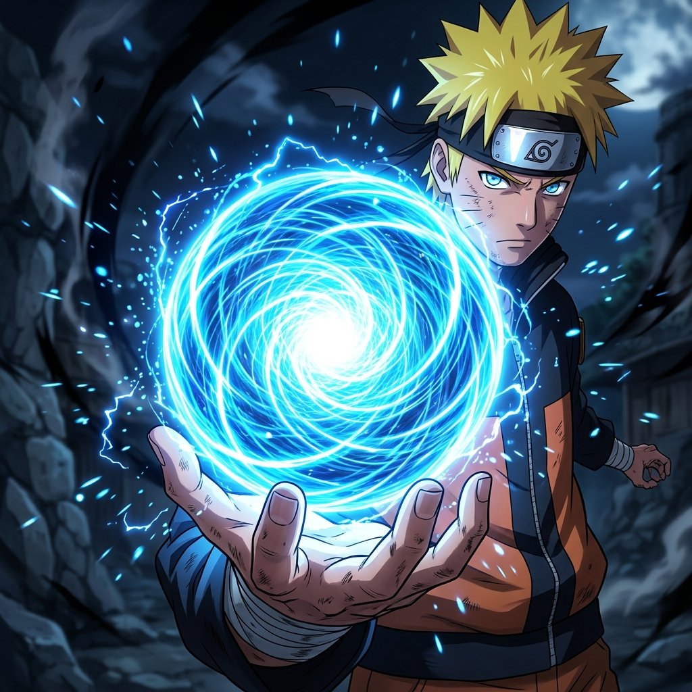
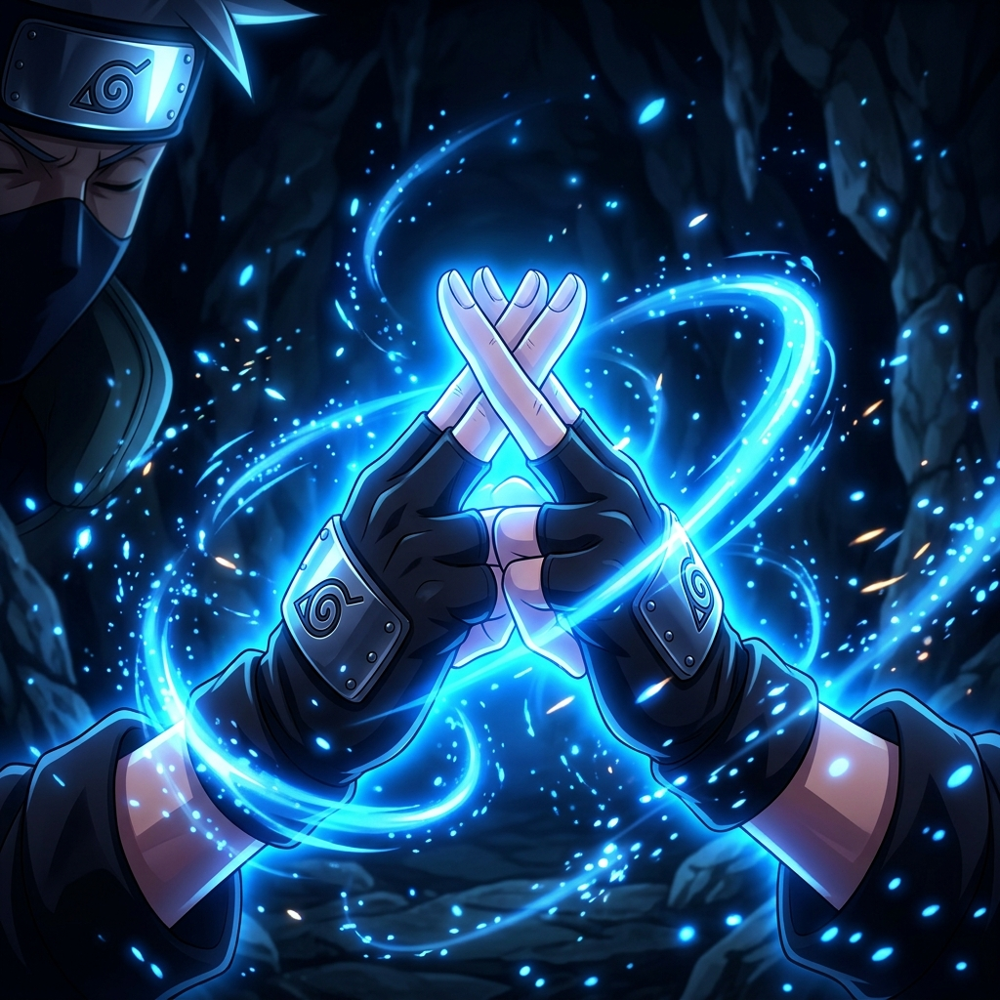
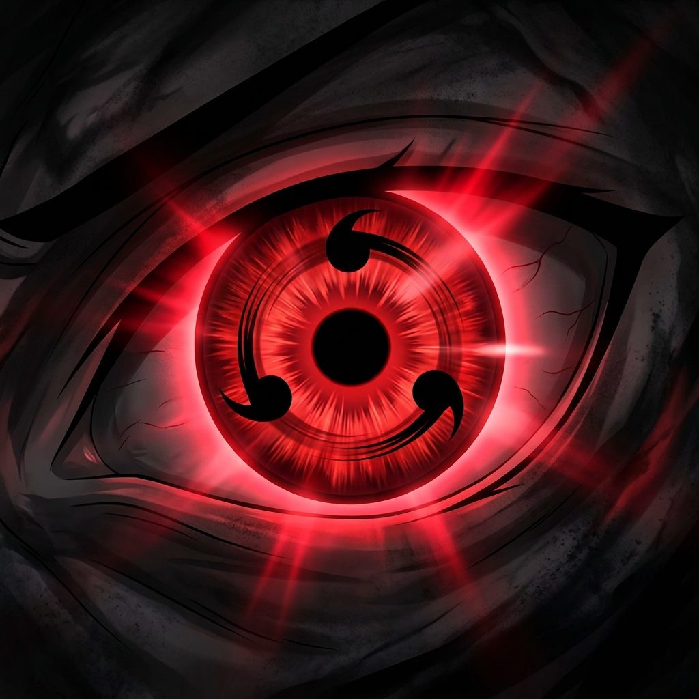

Every single jutsu has a CUSTOM handsign — Rasengan & Chidori are completely distinct. Do Shadow Clone to be redirected into the clone dimension. Do Sharingan, then say the number of eyes and they appear!

Blue spiraling chakra sphere. Right palm open, orb hovers & spins. Distinct handsign — not the same as Chidori.
Purple lightning blade with 1000 birds chirping. Crackling arcs & screen shake — completely different VFX from Rasengan.

Perform the sequence → white smoke + 3 clones spawn around you, then you are redirected into the clone dimension automatically.

Red flash → voice prompt appears. Say “two” / “five” / “seven” and that many spinning Sharingan eyes manifest with sound.
Tip: Open the Live Dojo (full-screen camera jutsu mode) for the ultimate hand-sign experience with per-jutsu VFX!